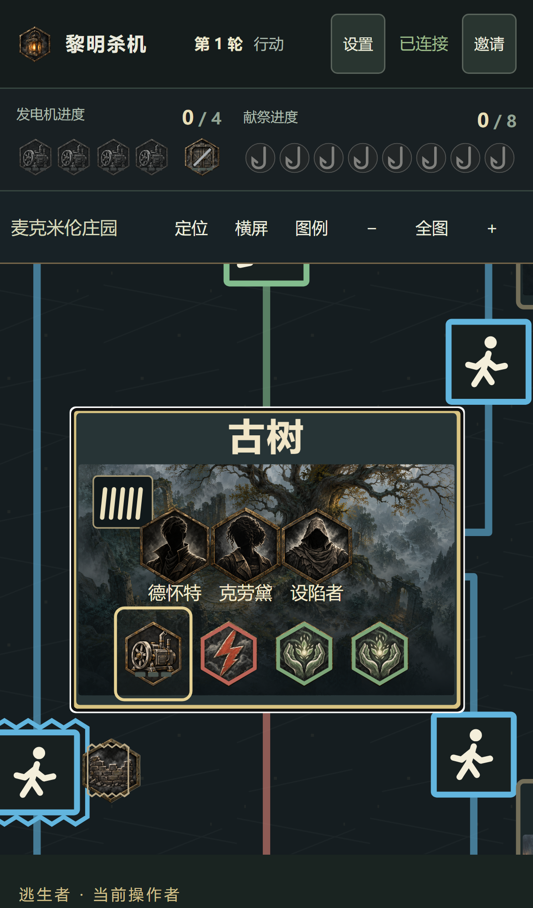
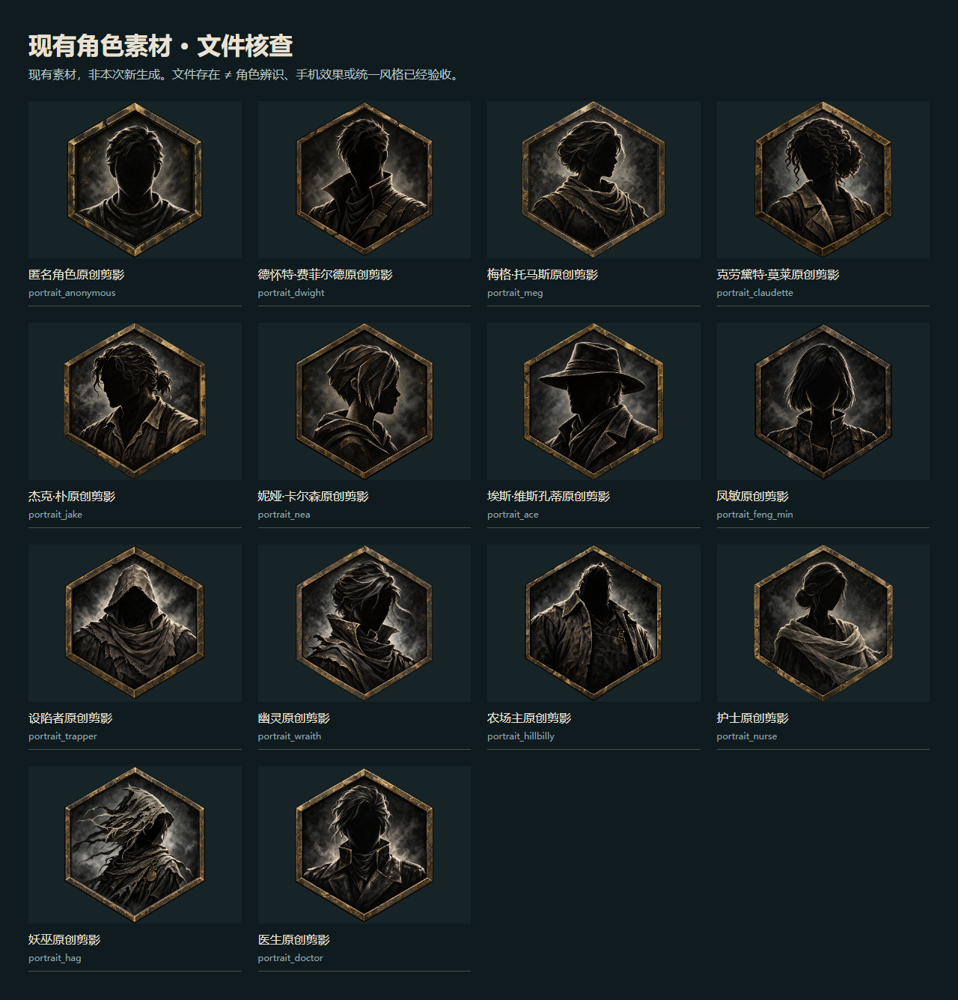
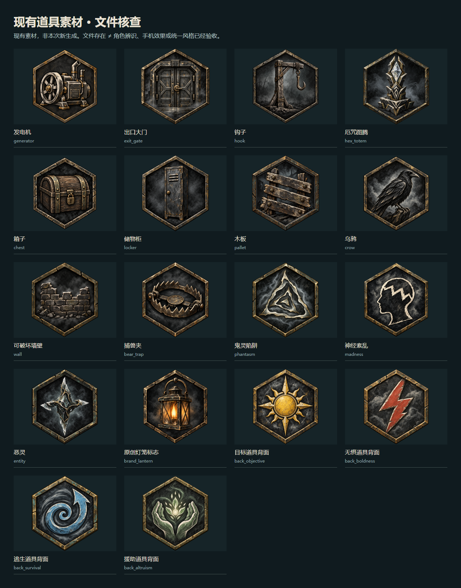
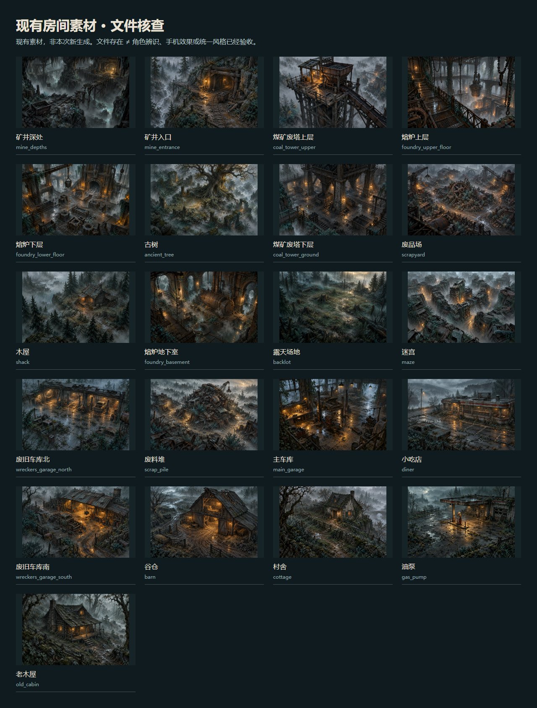

移动桌游体验调研 /《黎明杀机：桌游版》项目保留追猎与求生的气氛，让角色、目标和结果真正看得清。
看见当前任务 → 选择清楚的目标 → 提交 → 看到真实结果 → 留在下一步的入口。
正式界面已有美术与规则，但玩家仍会离开棋盘向下找操作。上次样稿压缩了点击路径，却还没有把实际场景、角色辨识和完整反馈带进来。
现有界面真实审计截图：修理发电机。右侧可滚动查看原截图。
这两张都是此前真实截图。本简报不展示伪造的新实机画面。
旧审计计入反馈后：多种操作3次、搬运一步4次；本次木板测量路径4次。冷进入HTTP约57.73MB，正式版尚未达到8MB目标。

观察角色、地区与战斗焦点的对应关系。我们可用局部强调替代重3D特写。官方图库 ↗
每种鸟有独立形象，题材音画共同表达身份。我们要让每个人物、物品也能被辨认。官方资料 ↗
观察棋盘、卡牌与资源的分区。吸收复杂信息的组织方法，不照搬密集横屏布局。官方页面 ↗
观察路线地图与手牌如何共处。我们的彩色动作方框、箭头和墙壁需要在小屏同时清楚。官方页面 ↗
开发者指南明确反对仅靠缩放完成手机适配；我们继续执行自己的48px与无页面滚动目标。手机开发规范 ↗
研究依据为官方文字、图库与商店预览；未安装试玩付费App，不宣称实测其点击次数、竖屏手感或帧率。没有证据表明这些竞品用AI制作。
一名逃生者、一名杀手、一种物品、一个房间；同时设计等待、拒绝、重连和结算。先验证角色能辨认，再扩展数量。
原创风格参考、人物设计表、统一光向。每图独立导出；文字、框、状态、合法目标保留为组件。
事件触发翻牌、进度、伤势与骰子表现。再测整局点击、48px、流量和实体手机；截图也检查实际像素。
不靠AI视频伪造骰子或胜负，不把完整UI做成一张图。规则引擎、协议、privacy.ts和游戏数据继续保留。
建议保留炭黑、骨白、旧黄铜与雾；四类道具颜色、真实地图路线及原创六边形框不变。角色先遵守原创剪影边界，改善轮廓可辨性；更清晰面部立绘属于待审定的风格升级。
逐文件核查：现有53张登记图都存在，含13名角色头像、1匿名头像、21房间和18道具/共用素材。缺少的是10种物品专属插画；另建议两张地图封面与十个模块关键图。
16张实体物品卡 ≠ 16种物品。10种定义各有图，副本复用。



这些是现有资产，不是本次新生成。文件齐全不能替代身份、状态、实战接入与手机裁切验收。